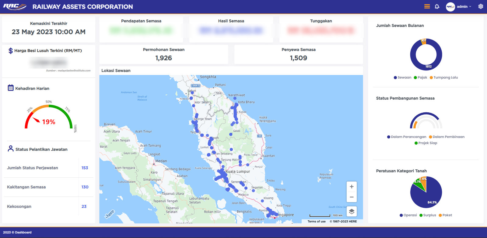
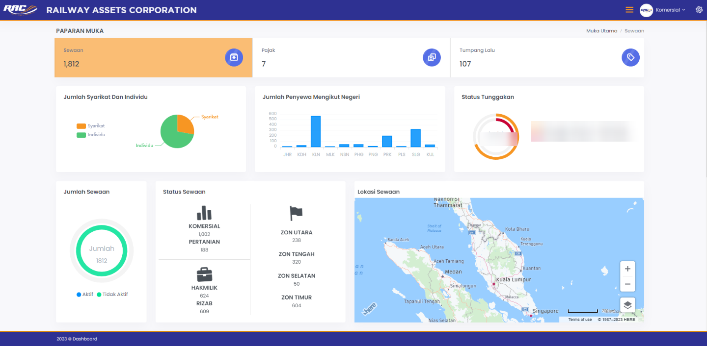
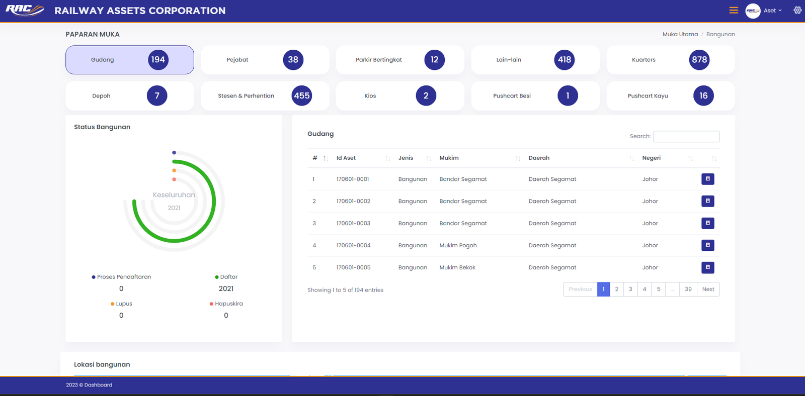
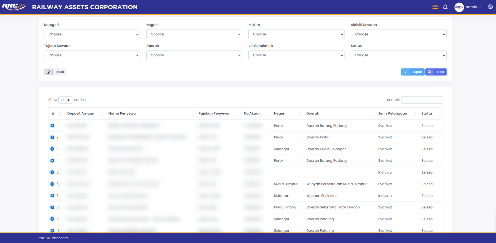
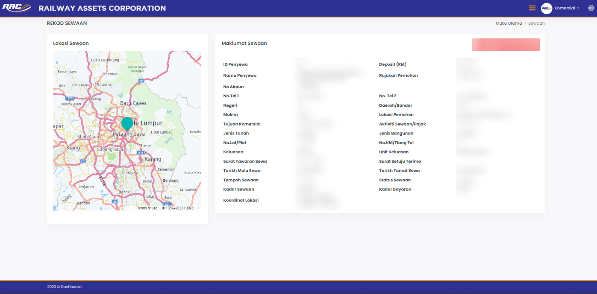
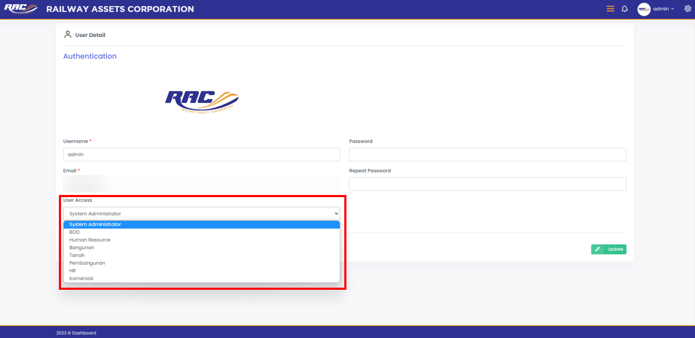
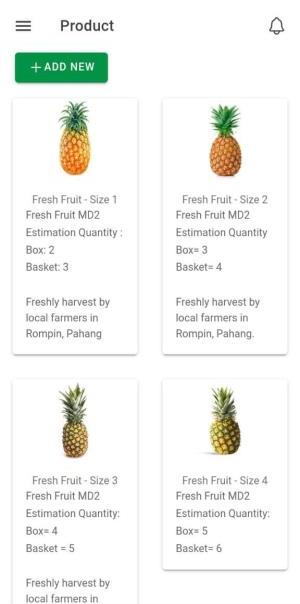

Kuala Lumpur, Malaysia
Irfan bin Zainuddin
Senior PHP / Laravel Developer
I build secure, workflow-heavy web systems for government and enterprise clients, from database design and multi-stage approval flows to REST APIs, RBAC, audit trails and production support.
5+years of experience
100,000+users on a national platform I led as sole developer
3 of 5main e-procurement modules actively developed
95%accuracy on an AI quality-inspection system
About
End-to-end ownership, from architecture to production.
Senior PHP/Laravel Developer with 5+ years of experience delivering secure, workflow-heavy web systems for government and enterprise clients. I am currently building core modules of a government e-procurement platform for a Malaysian city authority, through which all of the authority's tenders will run once live.
Previously, I led a national government platform serving 100,000+ users as its sole core developer. I am strongest in Laravel, PHP 8, MySQL, REST APIs, RBAC, audit trails, and query and page performance optimisation.
- EducationB.Eng. Technology (Mechatronics), UniKL MFI
- LanguagesBahasa Malaysia, English (both fluent)
- DomainE-procurement, approval workflows, licensing, government compliance
Skills
Tools I work with
Database
Security & Access
Frontend
Reporting & Output
Tools & Other
Projects
Selected work
Source code for all projects is private. Screenshots are added where they can be shared.
Featured · My own product
EAFC Pro Clubs League
A website for EA FC (formerly FIFA) Pro Clubs players to organise, create and join leagues, with a companion mobile app. An earlier version of the platform also existed before the current build.
- Sign in with Discord via Laravel Socialite
- Authentication with Laravel Sanctum
- Roles and permissions with Spatie Laravel Permission
- Image handling
- Companion mobile app in React Native / Expo (TypeScript)
Web app screenshot
placeholder
placeholder
Mobile app
placeholder
placeholder
Featured · Sole developer
RAC BI Dashboard & Reporting Management System
A web-based business intelligence dashboard and reporting system for Railway Assets Corporation (RAC), the statutory body that manages Malaysia's railway assets. I designed and built the whole system on my own at Galtech System; the project moved with me to Aerostar System, where I continued to support it.
- Pulls data from 4 systems: Rails (assets and rental), SAGA/GRP (finance), GIS and attendance, plus live steel prices from the Malaysia Steel Institute
- Scheduled cron jobs keep the dashboard data in sync with the source systems
- Reports filter by date, zone, state and constituency, with PDF and Excel export
- 3 user roles (Admin, Staff, BOD) with role-based access to modules
- Passed Factory Acceptance Test (FAT) and live acceptance before handover
7 modules
- Main Dashboardfor Admin and the Board of Directors
- Commercialrental and leasing
- Infrabuildings and assets
- Landland records by category
- Developmentproject progress
- HRKPIs and attendance
- Reportingfiltered reports, PDF/Excel






Screenshots are from the system's user manuals. Names, amounts, contact details and account data are blurred.
Confidential client project
no screenshots
no screenshots
Government E-Procurement Platform
An e-procurement platform for a Malaysian city authority, through which all of its tenders will run once live. Covers tendering, contractor and supplier portals, offer documents, tender evaluation, post-award consultant processes and claim workflows.
- One of a 3-developer team; actively develop 3 of the 5 main modules and personally built more than 50% of them
- Multi-role, multi-stage approval workflows with RBAC and audit trails
- REST APIs secured with Laravel Passport, PDF/Excel reports and dashboards
Confidential client project
no screenshots
no screenshots
Licence Survey & Management System
A licence survey system for a Malaysian city authority, used to monitor premises and billboard licences, records and compliance.
- Interactive admin listings, forms and workflow screens built with Laravel Livewire
Screenshot
placeholder
placeholder
GGMS & GGMS 2.0
A human resource management system (HRMS) built for a former employer. GGMS 2.0 is the modernisation of the original system.
- Built on Yii2 with MySQL
- Containerised with Docker
- Automated tests with Codeception
Government project
no screenshots
no screenshots
National Government Web System
A public-facing national government platform with 100,000+ users, where I was the sole core developer.
- Owned architecture, RBAC, security controls and APIs
- Scalability improvements and production optimisation
- React.js / React Native apps and supporting API integrations
More projects

RIPI Inventory & Supply Chain System
Plantation and estate system for a pineapple producer in Rompin, Pahang, with a mobile app. Modules for harvesting, inventory, supply chain and sales orders, plus QR codes for fields, blocks and storage.
Seven24 HRMS
Galtech System's HR management product, covering HR functions such as employee records, payroll and performance in one package.
Smart Attendance
Staff attendance tracking system.
Simtar
Web system with a companion mobile app.
KEMAS TVET Portal
Web portal for KEMAS TVET.
JAKOA Portal
Portal and intranet built on WordPress.
LoRa Long-Range IoT
IoT data pipelines over LoRa networks spanning 20+ km, with solar-powered field relays.
AI Quality Detection
Deep learning quality-inspection system with camera grading, achieving 95% classification accuracy.
Experience
Where I have worked
-
Senior PHP Developer
Aug 2025 – PresentVista Kencana Sdn Bhd · Kuala Lumpur
- Develop a government e-procurement system and a licence survey system in Laravel and MySQL for a Malaysian city authority.
- As one of a 3-developer team in a 20–30 person project, deliver about 3/5 of the overall e-procurement system.
- Design database schemas, service layers and module structure for multi-role, multi-stage approval workflows.
- Implement RBAC (Spatie Laravel Permission) and audit trails; build REST APIs secured with Laravel Passport for web and mobile clients.
- Optimise slow pages and MySQL queries, tune background jobs, and own analysis, coding, testing, deployment and production support.
-
Lead Programmer (Full-Stack PHP)
Jul 2024 – Jul 2025Aerostar System Sdn Bhd · Kuala Lumpur
- Led full-stack development, as sole core developer, of a national government web platform serving 100,000+ users (Yii2, MySQL).
- Architected the system and implemented RBAC, security controls and scalability improvements.
- Built React.js / React Native mobile applications and the supporting API integrations.
-
Software and Hardware Developer
Jul 2023 – Jun 2024Aerostar System Sdn Bhd · Kuala Lumpur
- Delivered PHP/Yii2 and Python components for government and IoT initiatives.
- Carried the RAC BI Dashboard over from Galtech System and continued supporting it.
- Engineered IoT data pipelines (Raspberry Pi, Python) over LoRa networks spanning 20+ km.
- Developed a deep learning quality-inspection system (Python, OpenCV) with 95% classification accuracy.
-
Web Developer
Jan 2021 – Jun 2023Galtech System Sdn Bhd · Malaysia
- Built Yii2 and WordPress applications for internal and client projects, including the JAKOA portal and intranet.
- Built the RAC BI Dashboard & Reporting Management System for Railway Assets Corporation as sole developer: 7 modules, 4 integrated systems and PDF/Excel reporting (Yii2, MySQL, Chart.js).
- Customised CRMs, dashboards and business portals, owning UI/UX, PHP backend, MySQL and deployment.
-
Engineering Trainee (Assistant Engineer)
Jan 2020 – Sep 2020Sony EMCS Bangi · Malaysia
- Supported R&D design verification testing (drop, thermal, vibration), assembly and firmware testing.
Contact
Let's work together
Open to Laravel and PHP roles and projects. The quickest way to reach me is email.